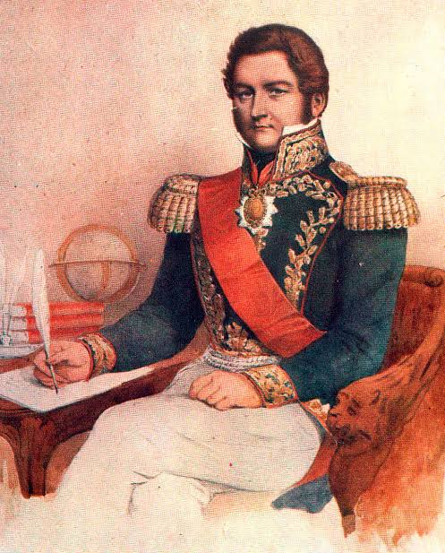
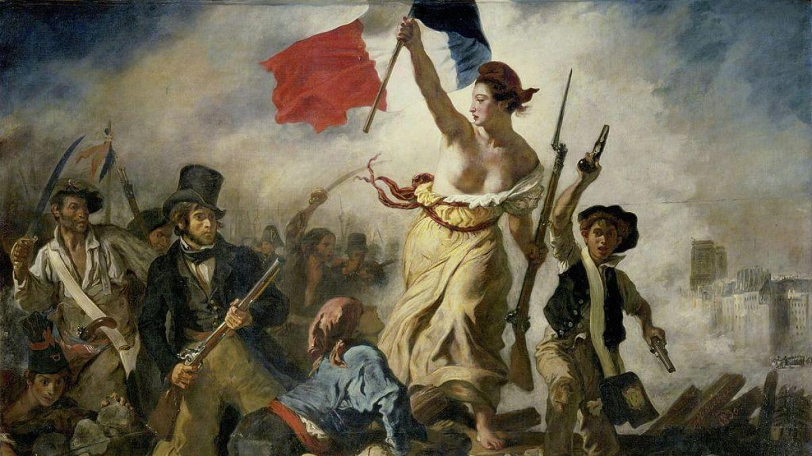
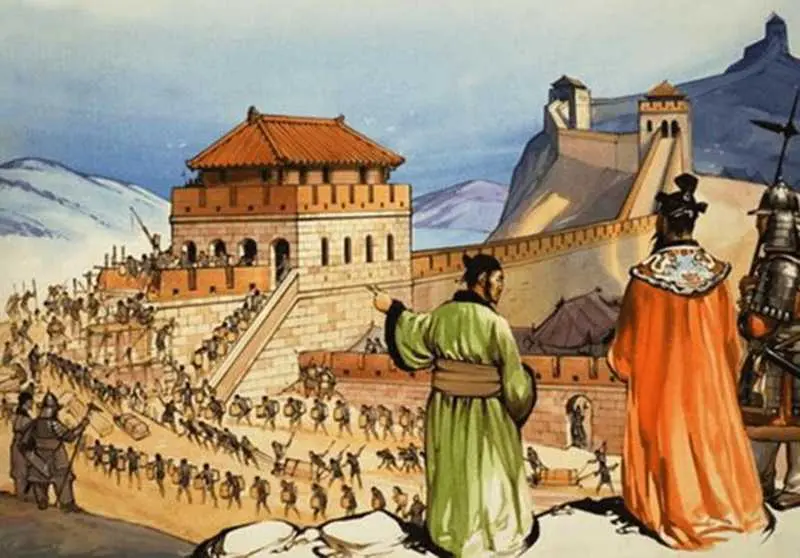

La historia de Argentina está marcada por su lucha por la independencia, su cultura y su evolución política a lo largo del tiempo.
La Revolución Francesa fue un proceso social y político que transformó Francia entre 1789 y 1799. Derrocó la monarquía absoluta, proclamó la República y eliminó las bases económicas y sociales del Antiguo Régimen. Sus ideales, como la libertad, igualdad y fraternidad, influyeron en el mundo entero y marcaron el fin de la Edad Moderna y el inicio de la Contemporánea.
Asia alberga algunas de las civilizaciones más antiguas y culturas diversas del mundo, desde China hasta India y Japón.
